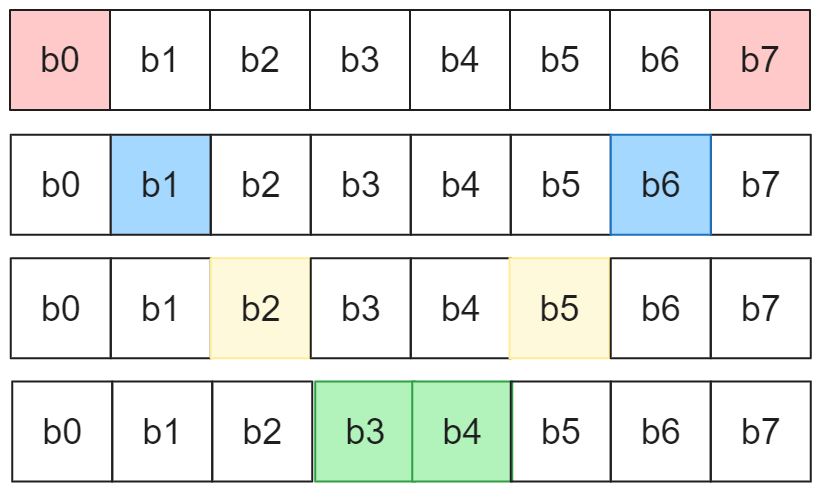
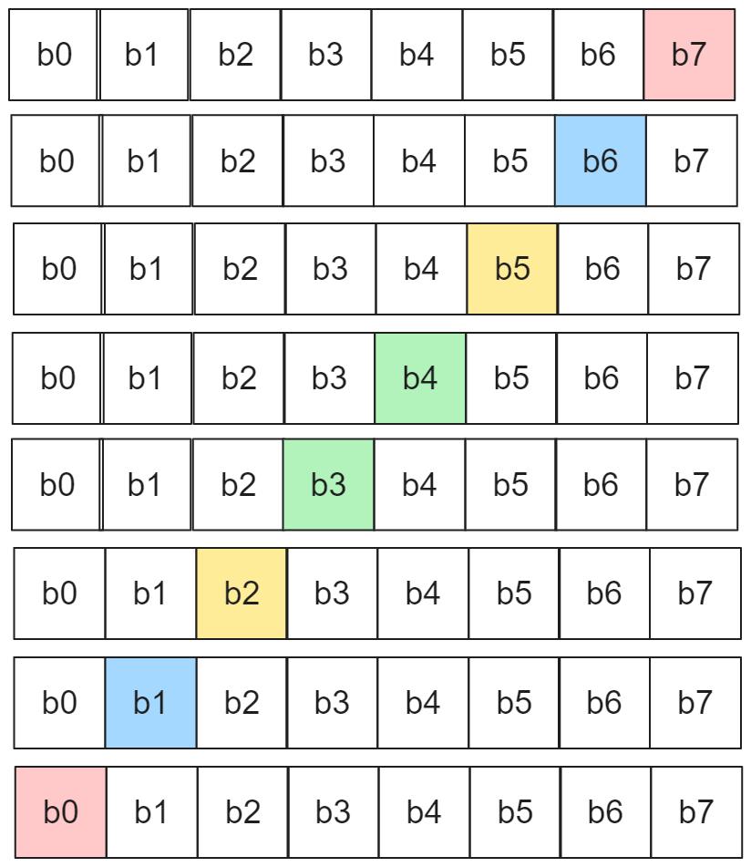

CDyM - TP1
Table of Contents
1. Atmega328p - C - Control de periféricos LED externos con puertos de entrada/salida
1.1. Conexión de los LEDs
1.1.1. Enunciado
Se desea conectar 8 diodos LED de diferentes colores al puerto B del MCU y encenderlos con una corriente de 10mA en cada uno. Realice el esquema eléctrico de la conexión en Proteus. Calcule la resistencia serie para cada color teniendo en cuenta la caída de tensión VLED (rojo=1.8V, verde=2.2V amarillo=2.0V azul=3.0V). Verifique que la corriente por cada terminal del MCU no supere la capacidad de corriente de cada salida y de todas las salidas del mismo puerto en funcionamiento simultáneo.
1.1.2. Interpretación
Dado el microcontrolador ATmega328P, se debe conectar 8 diodos LED de 4 diferentes colores (rojo, verde, amarillo y azul) al su puerto B. Para esto se calcularán las resistencias necesarias, teniendo como dato la corriente que circula por cada uno de los LEDS (10mA) y la caída de tensión de cada que varía dependiendo el color. Teniendo en cuenta la tensión de salida del microcontrolador, es crucial asegurar que la corriente a través de cada terminal no exceda su capacidad máxima de corriente de salida, así como también verificar que la suma de las corrientes en todas las salidas del puerto B no supere la capacidad máxima total. Por último, se debe realizar un esquema eléctrico en Proteus de la conexión pedida utilizando los LEDS y las resistencias calculadas.
1.1.3. Resolución
Para el c√°lculo de cada una de las resistencias se utilizaron los siguientes datos:
- Caída de Tensión de cada LED
- Rojo = 1.8V
- Verde = 2.2V
- Amarillo = 2.0V
- Azul = 3.0V
- Intensidad de corriente nominal (corriente que circula por cada LED), 10mA.
- Tensión de salida del Microcontrolador (4.75 V).
La tensión de salida del Microcontrolador se obtuvo mirando la figura extraída de la hoja de datos correspondiente al MCU “Voltajes de salida en pines de entrada/salida y Corriente (Vcc = 5V)”. Se tomó un valor aproximado de 4.75 V ya que la corriente es de 10mA y suponiendo una temperatura ambiente de 25°C.

Figure 1: VOH vs IOH

Figure 2: PULL-UP
Sabiendo por ley de Ohm que \( R_{\text{LED}} = \frac{V_{\text{OH}} - V_{\text{LED}}}{I_{\text{OH}}} \),calculamos:
\[ R_{\text{rojo}} = \frac{4.75\text{V} - 1.8\text{V}}{10\text{mA}} = 295\Omega \] \[ R_{\text{verde}} = \frac{4.75\text{V} - 2.2\text{V}}{10\text{mA}} = 255\Omega \] \[ R_{\text{amarillo}} = \frac{4.75\text{V} - 2.0\text{V}}{10\text{mA}} = 275\Omega \] \[ R_{\text{azul}} = \frac{4.75\text{V} - 3.0\text{V}}{10\text{mA}} = 175\Omega \]
Se debe verificar que la corriente por cada terminal del MCU no supere la capacidad de corriente de cada salida. Para ello, vemos que en la hoja de datos del microcontrolador ATmega328p, más precisamente de la sección 28.1 “Absolute Maximum Ratings”, nos dice que la corriente máxima de salida individual es de 40mA, cuyo valor es menor a los 10mA utilizados. Además, sabemos que la corriente total que circula por el puerto B en caso de que los 8 LEDS estén encendidos al mismo tiempo sería de 80mA, valor que es menor a los límites establecidos (100mA y 150mA) especificados en la sección 28.2 “DC Characteristics” de la hoja de datos.

Figure 3: LEDs
Los valores de las resistencias nominales serían para:
- Led rojo : 330
- Led verde: 270
- Led amarillo: 330
- Led azul: 180
De esta forma nos aseguramos que los valores de corriente estén por debajo de los 10mA, siendo resistencias lo suficientemente cercanas a las ideales calculadas previamente.

Figure 4: Resistores
1.2. Conexión del Pulsador
1.2.1. Enunciado
Se desea conectar un pulsador a una entrada digital del MCU y detectar cuando el usuario presiona y suelta el pulsador. Muestre el esquema de conexión y determine la configuración del MCU que corresponda. Investigue sobre el efecto de rebote que producen los pulsadores e implemente un método para eliminar este efecto en su algoritmo de detección (puede encontrar información útil en la bibliografía).
1.2.2. Interpretación
En este ejercicio se debe mostrar el esquema de conexión usado para conectar un pulsador al microcontrolador. Se debe desarrollar un código de programa que detecte cuando se oprime y se suelta el pulsador, como así también un método para eliminar el efecto rebote, que se produce al hacer falsos contactos en el interruptor.
1.2.3. Resolución
Existen dos maneras de conectar un pulsador a una entrada del MCU:
- La primera es conectar el pulsador a Vcc y una resistencia pull-down en la otra parte, es decir como se ve en la figura. Lo que hace esto es dar un valor bajo en caso que el pulsador esté sin presionar y un valor alto en caso contrario.
- La segunda forma de conectar al pulsador es inversa a la mencionada anteriormente, el pulsador es conectadoa GND y se utiliza una resistencia pull-up, como se ve en la figura. En este caso, cuando el pulsador no esté presionado se tiene un valor alto, y un valor bajo cuando lo esté.

Figure 5: Pull-up Interno
En la práctica usaremos la configuración con la resistencia pull-up, ya que el microcontrolador ATmega328P cuenta con este tipo de resistencias integradas. Por lo que se debe conectar el pulsador a GND y activar el pull-up interno, y así evitamos tener que añadir una resistencia adicional. Para conectar el pulsador al microcontrolador usamos el pin 0 del puerto C como entrada. Cuando se conecta un pulsador puede producirse lo que se conoce como efecto rebote. Lo que hace este efecto es que cuando se presiona o suelta el pulsador se produce una variación en la señal en la que alterna entre el valor alto y bajo. Esta variación puede afectar en la ejecución correcta del programa ya que devuelve valores erróneos a los esperados.

Figure 6: Rebote
Para resolver este problema, se pueden usar tanto técnicas de hardware como de software. Aquí utilizaremos una técnica por software que consiste en buscar N lecturas secuenciales estables del interruptor, donde N es un número que va desde 1 (sin ningún rebote) hasta aparentemente infinito. Generalmente, el código detecta una transición y luego comienza a incrementar o disminuir un contador, releyendo cada vez la entrada, hasta que N alcanza un conteo presumiblemente seguro y sin rebotes. Si el estado no es estable, el contador se reinicia a su valor inicial.

Figure 7: Polling
Esto último en pseudocódigo quedaría:
CONSTANTES:
- Intervalo de lectura del hardware en milisegundos
- Tiempo mínimo estable para considerar una tecla como presionada
- Tiempo mínimo estable para considerar una tecla como liberada
FUNCIÓN para manejar el antirrebote de la tecla:
Crear un contador para el tiempo de estabilización
Inicializar valores de salida de la función
Si el estado del pin coincide con el estado antirrebote actual
Actualizar el temporizador seg√∫n el estado actual
Sino
Si Temporizador expirado
Aceptar cambio de estado
Restablecer el temporizador seg√∫n el nuevo estado
FIN FUNCIÓN
1.3. Secuencia de Encendido
1.3.1. Enunciado
Realice el programa para que el MCU encienda los LEDs del puerto B con la siguiente secuencia de encendido repetitiva: b0 y b7 – b1 y b6 – b2 y b5 – b3 y b4. Luego, cuando el usuario presione y suelte el pulsador debe cambiar a la secuencia: b7-b6-b5-b4-b3-b2-b1-b0. Si presiona y suelta nuevamente vuelve a la secuencia original y así sucesivamente. Elija un retardo adecuado para la visualización en el simulador. Justifique.
1.3.2. Interpretación
Se debe realizar un programa que encienda LEDS conectados al puerto B variando entre dos secuencias según corresponda. Estas secuencias deben ir cambiando entre sí a medida que el usuario aprieta y suelta un pulsador. Se debe elegir un retardo que permita al usuario poder visualizar el encendido de los LEDS.
1.3.3. Resolución
Para la resolución de este problema primero debemos configurar el puerto B como salida, poniendo todos los bits del registro de este puerto en “1”. Además usaremos la configuración del problema 2, donde se utiliza el pin 0 del puerto C como entrada para conectar el pulsador. Luego hay dos secuencias de encendido de LEDS que van alternando en caso de que se presione y se deje de presionar el pulsador:
- De afuera hacia adentro (b0 y b7 – b1 y b6 – b2 y b5 – b3 y b4):

Figure 8: De afuera hacia adentro
En este caso se observa que los LEDS 0 a 3 (b0, b1, b2, b3) deben encenderse rotando hacia la izquierda, y los LEDS restantes (b4, b5, b6, b7) se prenden rotando hacia la derecha, hasta llegar al fin de la secuencia en donde vuelven a empezar.
- Orden descendente (b7-b6-b5-b4-b3-b2-b1-b0):

Figure 9: Orden descendente
Esta secuencia es en dirección descendente, es decir los LEDS se encienden de b7 a b0.
Sabiendo esto una posible solución a este ejercicio es rotar bits una posición hacia la izquierda o derecha según corresponda, hasta llegar al fin de la secuencia o hasta que el pulsador se presione y se suelte y debamos cambiar de dirección. Además vamos a recurrir al uso de retardos, usando la función _delayms(), para que sea posible la visualización de encendido de los LEDS para el usuario. En caso de que esto no se haga el usuario no podrá ver como los LEDS se prenden y se apagan.
Definición de Registros del microcontrolador con la librería AVR
Especificar la frecuencia de reloj del MCU en 16MHz
Retardos por software – Macros: depende de F_CPU con la libreria delay
Creación del tipo booleano
Constantes de tiempo
Definir intervalo de lectura del hardware en milisegundos
Definir tiempo mínimo estable para considerar una tecla como presionada
Definir tiempo mínimo estable para considerar una tecla como liberada
FUNCIÓN para manejar el antirrebote de la tecla
Crear un contador para el tiempo de estabilización
Inicializar valores de salida de la función
Si el estado del pin coincide con el estado antirrebote actual
Actualizar el temporizador seg√∫n el estado actual
Sino
Si Temporizador expirado
Aceptar cambio de estado
Restablecer el temporizador seg√∫n el nuevo estado
FIN FUNCIÓN
INICIA MAIN
Definir Puerto B como salida, pin 0 del Puerto C como entrada y activar pull-up interno
Mientras sea verdadero
Llamar a la rutina de antirrebote
Si el botón se presionó
Cambio la secuencia
Reset los LEDs a apagados
Si es la primera secuencia
Dejo los LEDs en el inicio de la primera secuencia
Sino
Dejo los LEDs en el inicio de la segunda secuencia
Si es primera secuencia
Si estoy al final de la primera secuencia
Vuelvo a arrancar la primera secuencia
Sino
Tomo los valores de los primeros 4 elementos
Roto hacia la izquierda
Tomo los valores de los √∫ltimos 4 elementos
Roto hacia la derecha
Asignar en PORTB
Aplicar un retardo en la visualización
Sino
Si estoy al final de la segunda secuencia
Vuelvo a arrancar la segunda secuencia
Sino
Establecer el primer valor de la secuencia de forma auxiliar
Roto hacia la izquierda un solo bit
Asignar en PORTB
Aplicar un retardo de visualización
FIN MAIN
1.4. Conclusiones
1.4.1. Enunciado
Saque conclusiones sobre el funcionamiento del programa, sobre las ventajas y desventajas de utilizar retardos (delays) para temporizar acciones y cómo estos afectan el tiempo de respuesta a la acción del usuario. Hágase preguntas como por ejemplo: ¿qué sucede si se deja presionado constantemente el pulsador? ¿Qué sucede si el retardo es de 1 segundo?
1.4.2. Resolución
Podemos concluir que el programa cumple con lo pedido, realiza las secuencias solicitadas de manera correcta. Se puede mencionar como posible problema el retardo utilizado para la visualización, ya que tiene dos desventajas.
Por una parte si el botón es presionado rápidamente y se encuentra en ejecución el delay antes mencionado, dicha pulsación no tendría efecto. El delay es una función bloqueante para el microcontrolador, ya que básicamente mantiene a la CPU ejecutando una serie de instrucciones NOP (que por definición no hacen nada) y no permiten al código principal seguir su flujo normal. Debido a esta primera desventaja, el usuario se ve obligado a mantener presionado el botón cierto tiempo. Gracias a que el código desarrollado posee un botón no bloqueante, el usuario no verá como las secuencias se detienen, pero tampoco verá un cambio instantáneo.
La segunda desventaja es entonces el tiempo de respuesta que tiene el programa, y que perjudica a la experiencia de usuario. La mayor ventaja de utilizar un retardo bloqueante es que simplemente se necesita hacer uso de la función delay para implementarla, lo que nos ahorraría poner en práctica otras soluciones.
1.5. Bibliografía
- The Ganssle Group
- https://www.ganssle.com/debouncing.htm
- https://www.ganssle.com/debouncing-pt2.htm
- megaAVR® Data Sheet, ATmega48A/PA/88A/PA/168A/PA/328/P